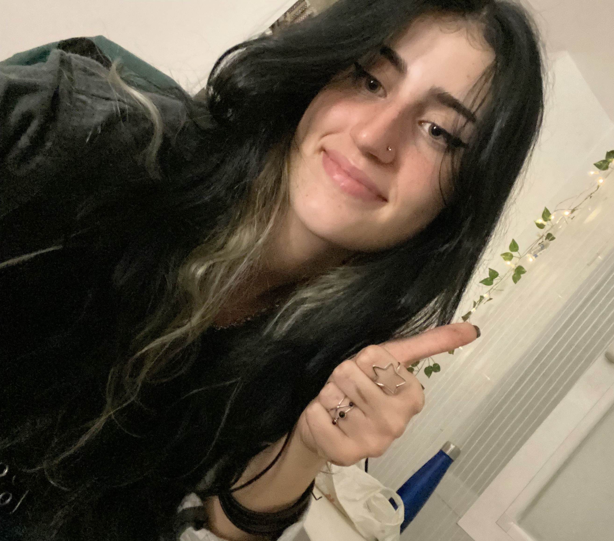
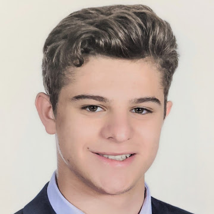

Lista de enlaces:
indice,
detalles,
bocetos,
planificacion,
contacto
MIEMBROS DEL GRUPO
Nayra Betancor Cano

Correo: naybetan@ucm.es
Siempre me han fascinado los coches, no solo por su velocidad, sino por la ingeniería y el diseño que hay detrás de cada modelo.
Me encanta descubrir nuevos vehículos, asistir a eventos de motor y, cuando tengo oportunidad, salir a la carretera a disfrutar del viaje tanto como del destino.
Pero si hay algo que realmente me hace sentir viva, es la música. Toco en una banda de metal, donde el sonido potente y la energía del escenario crean una experiencia única.
Nada se compara con la emoción de un buen riff y la conexión con el público en un concierto.
Además, me gusta la adrenalina, ya sea en la pista de carreras, en un ensayo intenso o explorando nuevas ciudades y culturas.
También disfruto del cine y los videojuegos, especialmente aquellos con una gran historia y ambientación.
Para mí, la vida es una mezcla de pasión, ruido y velocidad. Siempre en movimiento, siempre buscando el próximo reto.
Daniel Portuondo Rodríguez

Correo: dportu01@ucm.es
La música y el mar son dos elementos esenciales en mi vida. Desde pequeño, el sonido profundo y envolvente del violonchelo me ha acompañado, convirtiéndose en una forma de expresión y conexión con las emociones.
Tocar me permite explorar distintos géneros, desde la música clásica hasta adaptaciones contemporáneas.
Cuando no estoy sumergido en partituras, me encuentras en el agua, desafiando las olas con mi tabla de surf.
El mar me ofrece una sensación de libertad inigualable, un espacio donde la adrenalina y la calma se encuentran en perfecto equilibrio.
También me interesa la fotografía, especialmente capturar paisajes marinos y momentos espontáneos. La lectura es otro de mis refugios, con una preferencia por libros de aventuras y biografías de grandes músicos.
Me motiva la armonía entre la disciplina y la espontaneidad, entre las notas de una melodía y el movimiento impredecible del océano.
Alba Bastida Álvarez

Correo: albabast@ucm.es
Hay dos cosas que realmente disfruto en la vida: un buen vino y la compañía de mujeres fascinantes.
Me encanta descubrir nuevas bodegas, explorar distintos matices y entender las historias detrás de cada botella.
Ya sea un tinto intenso o un blanco afrutado, siempre hay un vino perfecto para cada momento y conversación.
Las conexiones humanas también son esenciales para mí. Me atrae la complicidad, las miradas cargadas de significado y esas charlas que se alargan hasta la madrugada.
Admiro la belleza en todas sus formas, pero sobre todo, la personalidad y la autenticidad.
Cuando no estoy degustando un vino o disfrutando de una buena compañía, me gusta viajar, perderme en ciudades con historia y probar nuevas experiencias gastronómicas.
También soy una apasionada de la literatura y la música, especialmente los géneros que transmiten emociones intensas.
La vida es para saborearla sin prisas, con pasión y sin miedo a disfrutar lo que realmente nos hace felices.
Pablo Arlandis Ocaña

Correo: parlandi@ucm.es
La tranquilidad y las buenas historias son pilares en mi vida. Me encanta sumergirme en mundos de fantasía a través de los juegos de rol, donde la imaginación y la estrategia crean aventuras únicas.
Jugar a Dragones y Mazmorras con mis amigos no es solo un pasatiempo, es una forma de construir historias juntos, de tomar decisiones inesperadas y de explorar lo desconocido sin salir de la mesa.
También soy un apasionado de la literatura y pertenezco a un club de lectura donde analizamos todo tipo de libros, desde clásicos hasta fantasía épica.
Leer y jugar a rol tienen mucho en común: ambos te transportan a otros mundos y te permiten ver la vida desde diferentes perspectivas.
Y en medio de todo esto, el tabaco es mi pequeño ritual. No hay nada como encender un cigarro y dejar que el humo se mezcle con el aire mientras reflexiono sobre la última partida, un libro fascinante o simplemente el momento presente.
La vida, para mí, es una combinación de historias bien contadas, conversaciones profundas y placeres sencillos que merecen disfrutarse sin prisa.
Guillermo Gonzalez Herrera

Correo: gugonz08@ucm.es
Soy una persona curiosa y apasionada por el aprendizaje. En mi tiempo libre, disfruto explorando mundos virtuales a través de los videojuegos, donde me encanta sumergirme en historias envolventes y desafíos estratégicos.
También me apasiona la escalada, una actividad que me permite conectar con la naturaleza y superar mis propios límites, ya sea en rocódromos o en rutas al aire libre.
Además, me interesa la tecnología y su impacto en nuestra vida cotidiana. Siempre estoy buscando nuevas herramientas y tendencias digitales para mejorar mi día a día.
También disfruto de la fotografía, capturando momentos únicos en mis viajes y excursiones.
La música es otra de mis grandes pasiones; me gusta descubrir nuevos géneros y artistas. Y cuando quiero relajarme, me sumerjo en la lectura de novelas de ciencia ficción o historia.
En definitiva, me motiva la aventura, la creatividad y el aprendizaje constante.